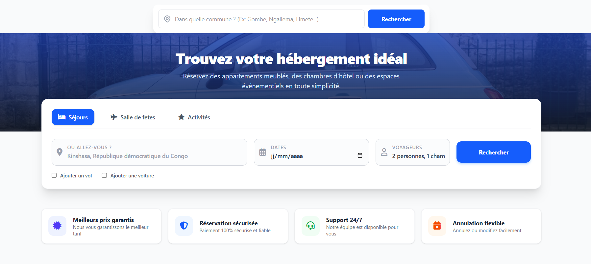
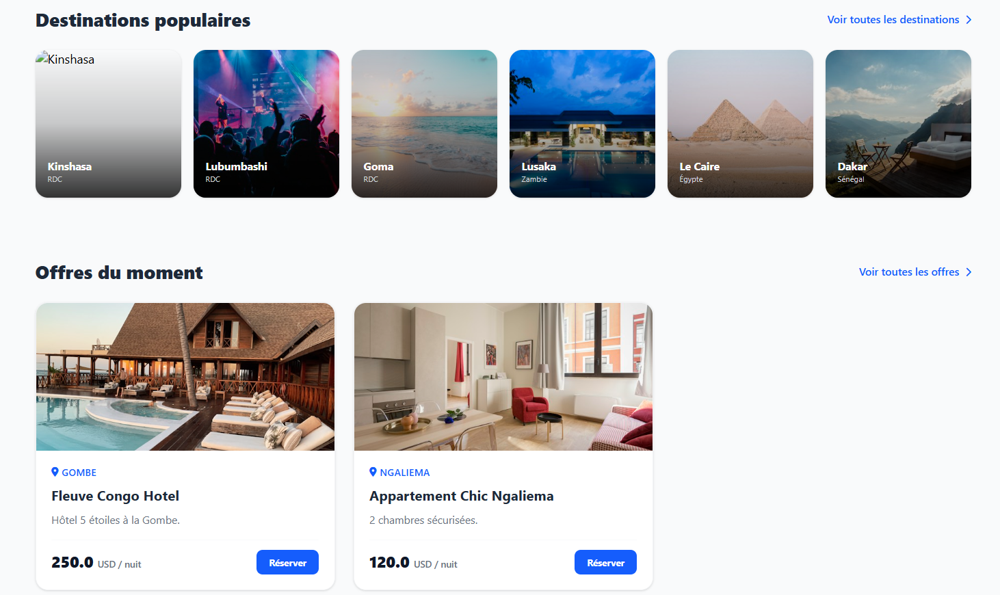
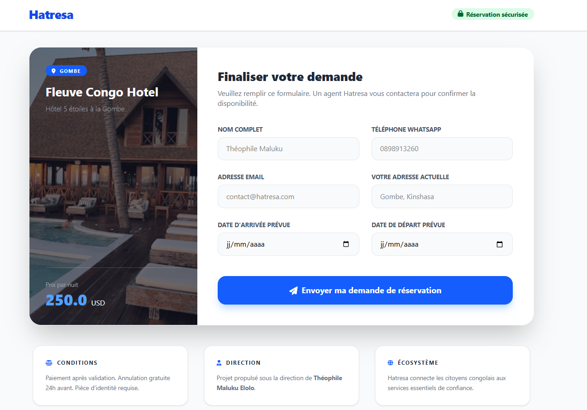

Je transforme des besoins professionnels en solutions numériques.
Professionnel polyvalent en informatique, développement web, administration et gestion de projets. Je conçois et fais évoluer des solutions web avec une approche orientée résultats.
Un profil à l’intersection de la technologie et de la gestion.
Titulaire d’un Graduat en Gestion Financière et certifié Cisco CCNA, je combine expérience administrative, informatique, réseaux et développement de solutions numériques.
Mon expérience de développement sur HATRESA m’a permis de travailler sur la structure d’une application web, les fonctionnalités, les données, les tests, le débogage et la préparation à la mise en ligne.
Compétences techniques
Backend
Python, Flask, routes, formulaires, logique applicative, services.
Frontend
HTML, Jinja2, Tailwind CSS, CSS personnalisé, JavaScript.
Données
SQL, SQLite, tables, requêtes et gestion des données applicatives.
Outils & déploiement
VS Code, Git/GitHub, requirements.txt, Gunicorn.
HATRESA
Plateforme web en développement. Présentation volontairement centrée sur les compétences techniques, sans divulgation du modèle stratégique du projet.

Présentation de l'interface et du parcours de recherche.

Visualisation des contenus et des possibilités proposées.

Interface de demande et parcours utilisateur.
Rôle : Fondateur & Développeur Web. Contributions : architecture applicative, développement de fonctionnalités, gestion des données, tests, débogage, évolution et préparation à la mise en ligne.
Interfaces présentées à titre de démonstration du travail en cours de développement.
Expérience professionnelle
Fondateur & Développeur Web — HATRESA
Projet digital en développement : conception, développement, données, tests et préparation à la mise en ligne.
Assistant Administratif — SODI Sarl
Flux documentaires, coordination et appui à la gestion opérationnelle.
Ingénieur Technique en Informatique — Ets Almak Consulting
Maintenance, parc informatique, support technique et formation utilisateurs.
Gérant — Ets Asa Concept
Gestion d’activités, projets, ressources et encadrement technique.
Un projet ou une opportunité ?
Je suis disponible pour échanger autour d’un projet numérique, d’une mission informatique ou d’une opportunité professionnelle.
Kinshasa, République Démocratique du Congo